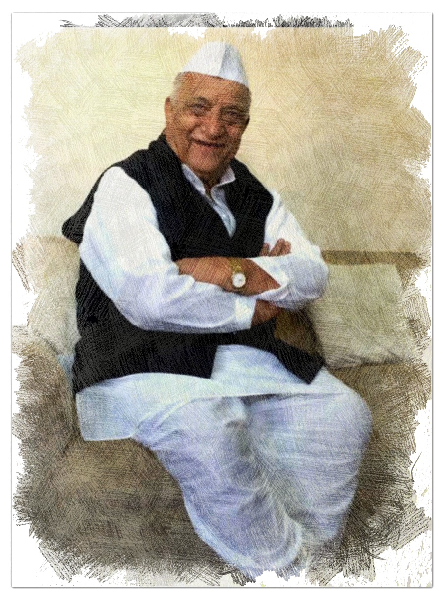

1980s Expansion
Under the visionary leadership of Late Honourable Shri Shankarrao Kolhe, the liquor division was established with the introduction of Country Liquor CL1 - 36.
Sanjivani Spirits is built on the dream of Late Honourable Shri Shankarraoji Kolhe Saheb, whose vision transformed a humble beginning in Kopargaon into a diversified group spanning education, sugar, liquor, ethanol, chemicals, pharma, power, and solvents.
Explore Our Portfolio
Sixty-four years ago, a visionary dream took shape: to build a world-class organisation that would generate employment and improve the lives of fellow villagers in Kopargaon. Although Late Honourable Shri Shankarraoji Kolhe Saheb had the opportunity to open a factory in Switzerland while working in Europe, he chose instead to return home and build for his country and community.
That decision led to the foundation of Sahakar Maharshi Shankarrao Kolhe Sahakari Sakhar Karkhana Ltd., backed by poor, illiterate small landholders of the Kopargaon Taluka. From that humble beginning, the group has grown into a diversified enterprise with a long-term commitment to progress, opportunity, and self-reliance.
Under the visionary leadership of Late Honourable Shri Shankarrao Kolhe, the liquor division was established with the introduction of Country Liquor CL1 - 36.
The launch of “Sanjivani Bobby Santra” quickly became a market hit among country liquor enthusiasts and accelerated the division's growth.
By 1996, SMSSK Ltd. had emerged as one of the top country liquor entities in India, setting a benchmark in the category.
As the market became more organised, Sanjivani Spirits introduced diverse flavours and built one-to-one relationships with consumers by responding to evolving tastes.
Each profile below includes a dedicated image slot so final portraits can be added without restructuring the page.

Holistic growth and prosperity for everyone has always been the core philosophy. Through perseverance, trust, integrity, and transparency, the Group has built progress across multiple sectors while encouraging every stakeholder to think, evolve, and act.
Over the last 64 years, the Sanjivani Group has grown with India. The focus remains on developing every stakeholder while setting benchmarks in manufacturing, quality control, human resource development, operations management, and CSR.

The liquor industry presents immense future opportunity, but sustainable growth depends on disciplined choices. The company continuously reviews its business model, risk management systems, and strategic direction to ensure it always makes the right move.
The key strategic priorities are clear: ramp up production capacity at optimum costs, leverage technology, automation, and digitalisation, and sustain investments that improve profitability, sustainability, and resource development.
"Operational excellence" remains the guiding principle. The team is committed to continuously enhancing efficiency, maintaining the highest standards of quality, driving innovation, and creating sustainable value.
Sanjivani Group's liquor division is equipped with strong R&D support, helping it create products that set new quality benchmarks in the Indian liquor industry.
Product development is guided by consumer taste, with constant work on new flavours that deliver unmatched experiences and wider market appeal.
The company has prudent growth plans and has brought in experienced minds to expand its footprint across the country with a broad array of products and services.
The next phase of growth is designed to be technology-driven, ensuring sustainable value creation for stakeholders well into the future.
To be the best country liquor manufacturer in all aspects of our business as perceived by customers and dealers.
To ensure socially acceptable practices and to provide high-quality liquor at affordable prices to our mass patrons.